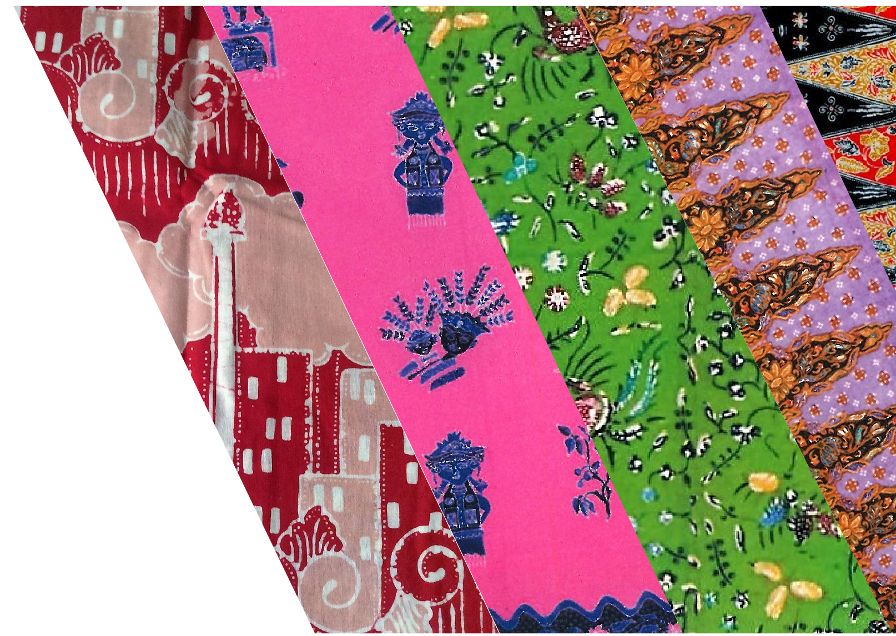

MOTIF
BATIK BETAWI
Motif Batik Betawi memiliki warna dan corak yang berbeda dari daerah lainya, yaitu adanya pengaruh lingkungan, falsafah dan adat istiadat orang Betawi serta dipengaruhi oleh Cina. Batik ini mempunyai 5 jenis motif utama diantaranya Ondel-Ondel, Tumpal Betawi, Pucuk Rebung, Gunung Tumpal, dan Monas. Ciri khas warna Batik Betawi mempunyai warna-warna yang mencolok seperti merah, hijau, oranye dan kuning.
